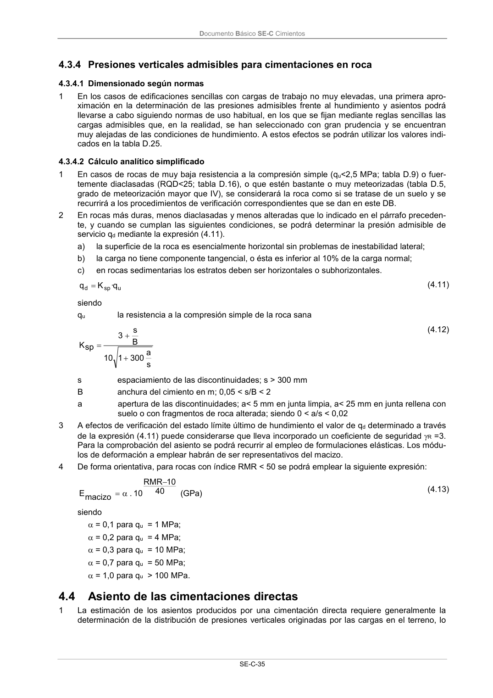

DB-SE-C · Asiento de las cimentaciones directas · versión 2019-12-20 · capa oficial
Formatos: JSON compacto · Markdown · PDF fuente
Ámbito del documento · texto del ámbito · documento y tablas
ID técnico a0079 · PDF pág. 40-41 · jerarquía no validada por persona · contrastado con el literal de la página 40 (candidato tipográfico); no validado por persona · padre: raíz
Asiento de las cimentaciones directas 1 La estimación de los asientos producidos por una cimentación directa requiere generalmente la determinación de la distribución de presiones verticales originadas por las cargas en el terreno, lo Documento Básico SE-C Cimientos SE-C-36 que podrá llevarse a cabo mediante el empleo de formulaciones elásticas. (véase tablas D.23 y D.24) 2 En la estimación de los asientos se podrá utilizar la presión neta, de utilidad para las cimentaciones compensadas. 3 En general se podrá suponer que la zona de interés a efectos de cálculo de asientos se circunscribe a una profundidad tal que el incremento de presión vertical originado en el terreno sea el menor de los siguientes valores: a) el 10% de la presión vertical neta transmitida por la cimentación; b) el 5% de la presión efectiva vertical existente a esa profundidad antes de construir el edificio. 4 El criterio apuntado en el párrafo anterior suele dar lugar a que, el citado límite de interés en el te- rreno tenga una profundidad aproximada de 2B, siendo B el ancho o dimensión menor en planta de la cimentación correspondiente. 5 Si se trata de un edificio cimentado por zapatas relativamente próximas los bulbos de tensiones de las zapatas individuales se podrán solapar en profundidad (véase apartado E.4). Los criterios ex- puestos en los párrafos anteriores deben aplicarse teniendo en cuenta el potencial efecto de solape citado. 6 La estimación de asientos se podrá realizar conforme a lo indicado en el anejo F.1.2. 4.5

PDF fuente redistribuible: copia fiel enlazada en esta página (SHA256 verificado).